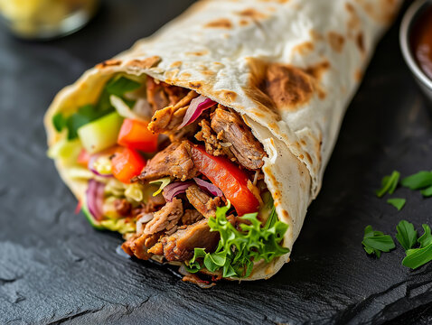

Shaorma
Apasa aici pentru a te intoarce la meniul acasa.

Shaorma de pui e unul dintre cele mai populare preparate de tip fast food. Gasim sute de shaormerii doar in Bucuresti, insa o varianta de casa este mult mai savuroasa si sanatoasa.
Pentru a prepara shaorma aveti nevoie de urmatoarele ingrediente:
Ingrediente:
- cateva lipii facute in casa
- 700 g piept de pui
- cativa castraveciori murati taiati in bastonase
- cateva frunze salata verde
- putina varza tocata
- zeama de la o lamaie
- 1 ceapa tocata julien
- 3-4 rosii taiate felii
- 4-5 linguri ulei
- 3-4 linguri sos picant de maioneza
- 3-4 linguri maioneza cu usturoi
- 1 lingurita condimente pentru shaorma
- 1 lingurita pudra de usturoi
- 1 lingurita boia dulce
- 1 lingurita curry
- putina curcuma
- putina sare
Mod de preparare:
- Marinarea carnii
Secretul unei shaorme de pui bune sta in marinarea carnii.
Am pregatit pentru inceput marinata. Intr-un bol am pus iaurtul. Peste acesta am pus pasta de rosii, uleiul, sucul de lamaie si otetul de vin rosu.
Am adaugat apoi toate condimentele pe care le-am enumerat in lista de ingrediente.
- Am amestecat foarte bine, pana s-a omogenizat compozitia.
Am pus pe rand bucatile de piept de pui ce au o grosime de aproximativ 1 cm in marinata si le-am imbracat cu aceasta pana cand au fost bine acoperite.
- Am acoperit bolul cu o folie alimentara si l-am pus in frigider pentru minim 4 ore, apoi l-am scos si l-am lasat la temperatura camerei o ora.
- Inainte sa pun carnea pe gratar am pus cartofii la prajit, astfel incat sa fie gata toate in acelasi timp.
Daca vrei o varianta mai sanatoasa ii poti coace.
- Am prajit pieptul de pui pe o plita de fonta incinsa foarte bine. Am lasat o parte din marinata pe carne.
- Intre timp am amestecat sosul de maioneza cu ketchup si am incalzit lipiile.
Am taiat pieptul de pui in fasii subtiri.
- In continuare am uns lipia cu sosul de maioneza roz, am presarat salata verde tocata.
Apoi am pus felii de ceapa rosie, carne, castraveti murati, ardei iute, felii de rosii, cartofi prajiti si sos de usturoi.
- Am impachetat shaorma, am pus-o in hartie, dar puteti folosi si o foaie de staniol.
In functie de gusturi, puteti pune in shaorma patrunjel verde, varza, castraveti proaspeti. In loc de maioneza puteti folosi iaurt grecesc si aveti o shaorma foarte sanatoasa.
Pofta mare!